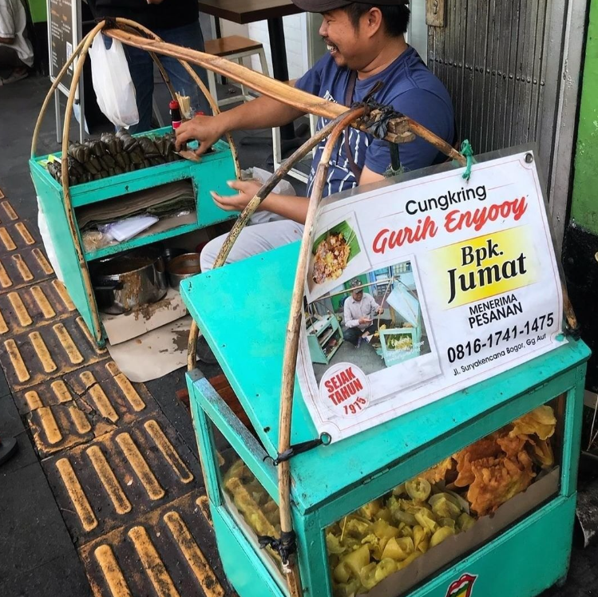
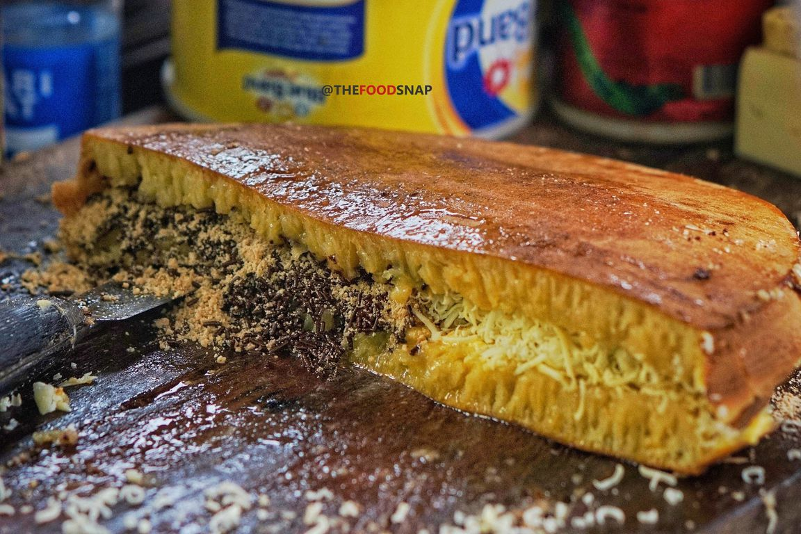
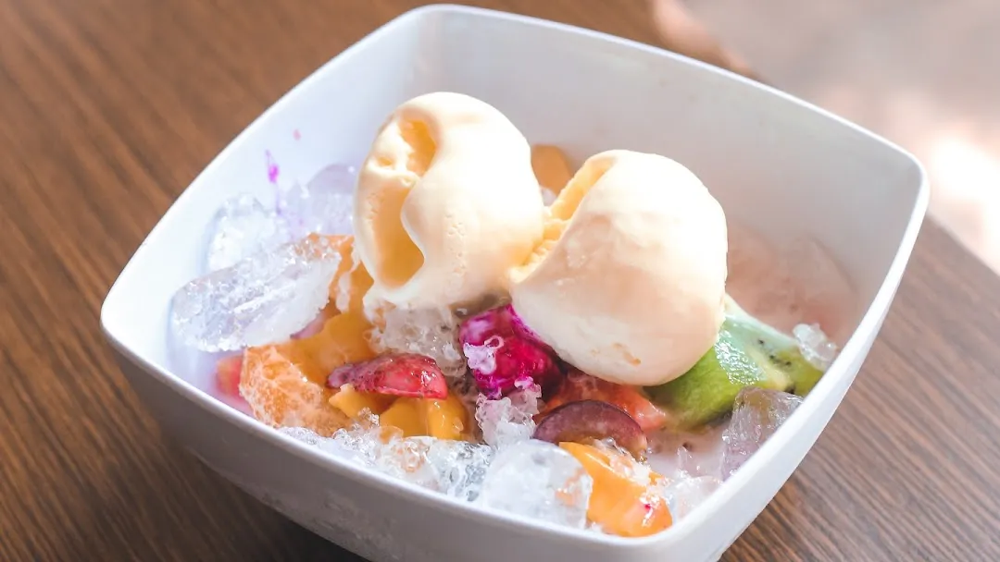
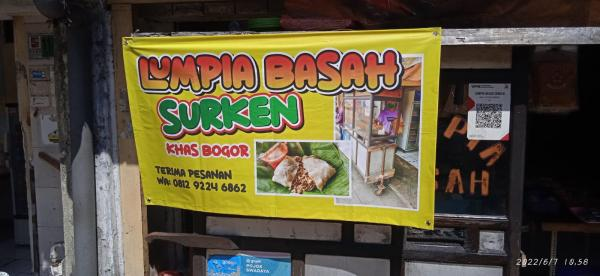
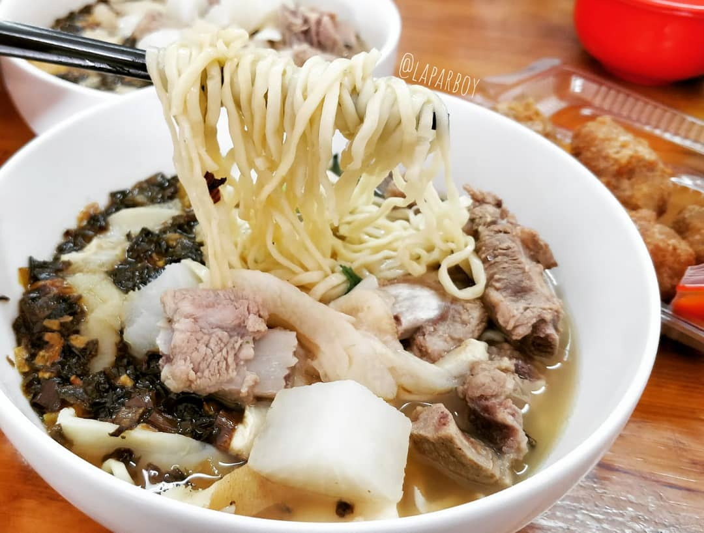

Meski hanya berupa tenda pinggir jalan, namun jangan tanya antrean orang-orang yang ingin makan soto kuning khas Bogor yang legendaris ini. Orang biasanya sudah mulai antri sejak siang hari untuk mencicipi soto Bogor Pak Salam ini. Soal rasa tak perlu diragukan lagi. Anda bisa memilih sendiri jenis daging yang diinginkan; ada kikil sapi, limpa, paru, usus dan babat. Pelengkapnya pun ada banyak, seperti perkedel kentang yang juara, sate kentang dan sate jengkol.

Cungkring Pak Jumat
Cungkring Pak Jumat bertempat di kawasan Suryakencana yang terkenal sebagai salah satu sentra kuliner Bogor. Namun siapa sangka ternyata cungkring legendaris inilah yang menjadi pemicu berjamurnya pedagang kuliner di sepanjang jalan tersebut.

Martabak Ncek
Ini salah satu martabak wishlist saya. Lokasinya ada di belokan sebelum Indomaret Suryakencana. Kalau kalian mau ke sini pas weekend atau hari libur, sebaiknya pas pagi. Saya pernah ke sini pas hari libur dan udah kehabisan pas jam 2 siang. Saya akhirnya kebagian karena dateng pas weekdays. Saya mencoba : 1. Martabak Mania 1/2 Coklat 1/2 Keju (Rp. 60.000). Martabaknya dimasak di atas arang sehingga ada aroma smokey khas arang di bagian tertentu.
Informasi lebih lanjut tentang destinasi ini...

Sop Buah Pak Ewok
Kuliner legendaris yang satu ini sekarang memiliki dua cabang, yaitu di samping IPB Botani dan Jalan Haur Jaya. Anda bebas pilih mau melipir ke cabang yang mana karena sama enaknya. Perpaduan aneka buah segar dengan susu akan memanjakan lidah Anda. Sop duriannya paling juara, lho!.
Informasi lebih lanjut tentang destinasi ini .

Lumpia Basah Suryakencana
Menyusuri Jalan Suryakencana siap-siap disambut aroma lumpia basah yang tengah dimasak. Aromanya begitu menggoda dan menggugah selera! Lumpia basah khas Gang Aut Bogor ini isinya sederhana; bengkoang, tahu goreng, tauge dan telur. Tapi urusan rasa, jempolan deh!. Informasi lebih lanjut tentang destinasi ini...

Soto Mie Agih
Bukannya menggunakan daging ayam seperti soto mie pada umumnya, soto mie Agih menggunakan daging dan jeroan babi sebagai toppingnya. Ada juga babat yang lembut dan juga empuk yang selalu buat nagih!.